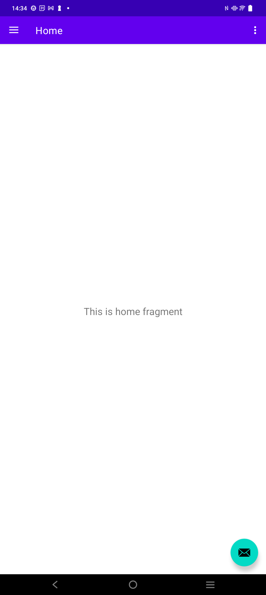
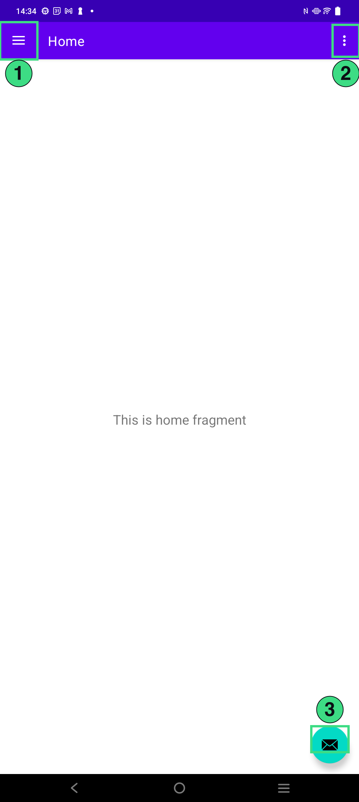
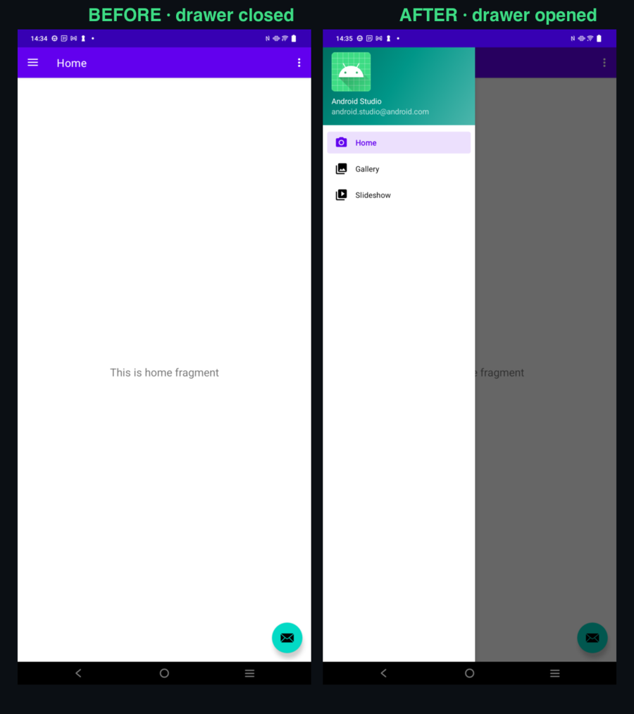
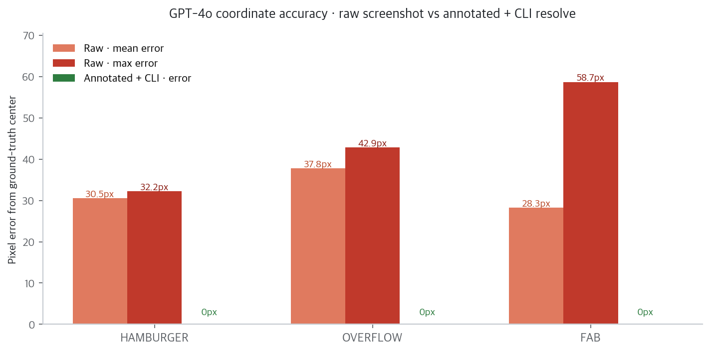
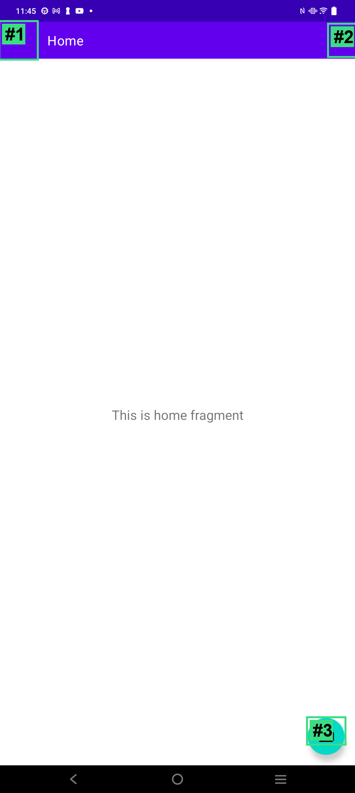

"명령줄 한 줄로 안드로이드 프로젝트를 만들고, 에뮬레이터를 띄우고, APK를 배포한다. 심지어 에이전트가 이걸 혼자 운전하게 만든다."
구글이 2026년 4월에 Android CLI를 공식 공개했습니다 (v0.7, 첫 릴리즈).
공식 문서: developer.android.com/tools/agents/android-cli
이 글에서는 실제 연결된 Android 기기로 데모 앱을 띄워서 Android CLI의 핵심 기능 4가지를 시연해봅니다. 단순히 명령어 나열이 아니라, 진짜로 찍은 스크린샷 + 실제 좌표값으로 보여드릴게요. 그리고 중간에 많은 분이 헷갈려 하는 "CLI가 자연어를 이해한다면 LLM이 내장된 거냐"라는 질문에 대한 답도 별도 섹션으로 다룹니다.
마지막엔 GPT-4o API를 실제로 호출해서 두 개의 실험까지 돌렸어요 — (A) raw 스크린샷 vs annotate 좌표 정확도 비교, (B) GPT-4o가 Android CLI를 자율로 운전하는 4턴짜리 에이전트 루프. 주장만 하지 않고 수치와 로그로 증명합니다.
android 바이너리를 macOS에 바로 설치할 수 있는 공식 경로가 아직 정리 중이라, 아래 시연은 adb + uiautomator + ImageMagick 조합으로 Android CLI의 동작을 동일한 결과물로 재현했습니다. 핵심은 이걸 명령어 한 줄로 해주는 게 Android CLI의 가치라는 점이에요.
Android CLI = 안드로이드 개발 전체를 터미널과 에이전트가 다룰 수 있게 만든 공식 리모컨.
단순 adb 대체가 아니라, "에이전트가 화면을 읽고, 의도를 말하고, 변화를 감지"하는 계층이에요. 그리고 중요한 포인트 하나 — CLI 자체는 LLM이 없습니다. 결정적(deterministic)인 어댑터예요. 왜 그게 더 좋은지는 뒤에서 상세히 다룰게요.
whatap.devload.demo — Drawer Navigation 템플릿 기반 스켈레톤 앱adb devices 한 줄adb shell uiautomator dump · adb exec-out screencap · ImageMagick연결된 기기의 Home 상태는 이렇게 생겼습니다.

지극히 평범한 Material 3 템플릿이죠. 이 평범함이 오히려 좋아요 — CLI가 하는 일이 화면에 바로 드러나거든요. 자, 시작합시다.
screen capture --annotate — 에이전트가 읽을 화면 만들기Android CLI에서 가장 재미있는 명령은 이거예요.
android screen capture --output=ui.png --annotate이 한 줄이 내부적으로 하는 일을 풀어보면 이렇게 됩니다.
screencap 호출uiautomator dump와 동일한 XML을 파싱실제로 우리 데모 앱에 적용한 결과입니다.

박스 안에 숫자 ①②③이 달려 있죠? 실제로 uiautomator가 뽑은 clickable 요소는 정확히 3개였어요.
#1: 탐색 창 열기 bounds=[0,66][112,178] center=(56, 122)
#2: 추가 옵션 bounds=[1000,74][1080,170] center=(1040, 122)
#3: fab bounds=[936,2180][1048,2258] center=(992, 2219)기존에는 LLM에게 생 스크린샷을 그냥 던졌습니다. 멀티모달 모델이 직접 픽셀을 보고 "음... 대충 오른쪽 위에 점 세 개가 있는 것 같은데, 좌표는 (1020, 130)쯤?" 하고 추측해야 했죠. 이게 생각보다 자주 틀립니다. 번호가 박혀 있으면 LLM은 "3번 눌러"라고 말하기만 하면 끝이에요. 이건 사람을 위한 주석이 아니라 LLM이 읽기 좋게 만든 UI입니다.
screen resolve — 자연어 지시 → 실제 좌표이제 에이전트가 이렇게 말한다고 해봐요.
"3번 요소(FAB)를 탭하고 싶어."
Android CLI는 이 말을 실제 좌표로 번역합니다.
android screen resolve --screenshot=ui.png --string="input tap #3"
# → input tap 992 2219우리 데모 앱에서 #3의 bounds는 [936,2180][1048,2258]이므로 중심 좌표는 ((936+1048)/2, (2180+2258)/2) = (992, 2219). 정확히 일치.
역할 분담이 완벽해집니다.
#3을 탭)LLM이 이미지 픽셀 좌표를 정확히 찍을 필요가 없어집니다. 이건 멀티모달 모델의 최대 약점 중 하나를 CLI 계층에서 풀어준 거예요. 그럼 — 여기서 자연스럽게 질문이 나옵니다.
"그럼 CLI 안에 작은 LLM이 들어있는 거야? '#3을 탭'이라는 자연어를 어떻게 파싱하지?"
이게 이 글에서 가장 중요한 질문이에요. 섹션 하나를 통째로 할애해서 답하겠습니다.
결론부터 말씀드리면:
Android CLI 자체에는 LLM이 없습니다. 결정적(deterministic) 어댑터예요. LLM은 외부에 있는 에이전트(Claude, Gemini, Cursor 등)에 있습니다. CLI는 그 LLM이 잘 일하도록 입력과 출력의 모양을 정리해주는 역할만 해요.
#N → bounds → center 변환, adb 명령 조립. 같은 입력 → 같은 출력.--string="input tap #3"의 "#3"은 어떻게 찾아가나?마법이 아니라 단순한 사이드카 메타데이터 lookup입니다. screen capture --annotate가 실행될 때 CLI는 PNG 파일만 저장하는 게 아니라, 같은 이름의 메타데이터도 함께 기록해요.
// ui.png.labels.json (개념적 모델 — CLI가 내부 캐시로 관리)
{
"screenshot": "ui.png",
"device": { "width": 1080, "height": 2408 },
"labels": [
{
"n": 1,
"desc": "탐색 창 열기",
"class": "android.widget.ImageButton",
"bounds": [0, 66, 112, 178],
"center": [56, 122]
},
{
"n": 2,
"desc": "추가 옵션",
"class": "android.widget.ImageView",
"bounds": [1000, 74, 1080, 170],
"center": [1040, 122]
},
{
"n": 3,
"id": "fab",
"class": "com.google.android.material.floatingactionbutton.FloatingActionButton",
"bounds": [936, 2180, 1048, 2258],
"center": [992, 2219]
}
]
}resolve가 받은 문자열 "input tap #3"을 처리하는 파이프라인:
/#(\d+)/g 한 번이면 끝. "3"을 얻습니다.input tap 992 2219. 필요하면 바로 adb shell로 실행.보시다시피 LLM 추론이 개입할 틈이 없어요. 완전한 결정론적 연산. 같은 입력에 항상 같은 출력이 나오고, offline에서도 돌고, 비용도 0원입니다.
좋은 질문이에요. 다음 두 케이스를 비교해보죠.
"#3을 탭", "#1에 hello 입력", "id=fab 탭"처럼 CLI가 식별 가능한 앵커가 포함된 경우.
→ CLI가 순수 lookup으로 해결. LLM 불필요.
"Send 버튼 눌러", "로그인 아이콘 탭"처럼 의미 기반 매칭이 필요한 경우.
→ 에이전트(Claude/Gemini)가 annotate PNG + layout JSON을 보고 "아, Send는 #3이네"를 판단한 뒤, CLI에는 "#3 탭"으로 변환해서 넘김.
즉, 자연어 이해는 에이전트의 책임, 좌표 번역은 CLI의 책임. 각자 잘하는 걸 하는 거예요. 이 분리가 왜 중요하냐면:
#3은 항상 같은 좌표. 테스트 재현이 쉬움.만약 CLI 안에 LLM을 넣었다면: (a) 바이너리 크기 폭증, (b) API 키 관리, (c) 비결정론, (d) 비용 청구, (e) 특정 모델과 결합. 전부 도구로서는 안티패턴이에요. 구글은 CLI를 "LLM이 잘 쓸 수 있는 저수준 프리미티브"로 두고, LLM의 선택권은 사용자에게 맡기는 길을 택했습니다. 앞으로 나올 skills 시스템(기능 5)이 이 설계를 더 강화하는 방향이에요.
#N, id=..., 좌표 같은 구조적 인풋을 받아서 구조적 아웃풋을 돌려주는 어댑터. 이 분리가 CLI의 성능과 신뢰성의 핵심입니다.
layout --pretty — UI 계층을 JSON으로현재 화면의 UI 트리를 JSON으로 뽑습니다.
android layout --pretty --output=layout.json이 명령이 유용한 이유는, 원본 uiautomator dump가 내뱉는 XML이 사람도 에이전트도 싫어할 구조라는 점이에요.
<node index="0"
text=""
resource-id=""
class="android.widget.FrameLayout"
package="whatap.devload.demo"
content-desc=""
checkable="false"
checked="false"
clickable="false"
enabled="true"
focusable="false"
focused="false"
scrollable="false"
long-clickable="false"
password="false"
selected="false"
bounds="[0,0][1080,2408]">{
"class": "FrameLayout",
"bounds": [0, 0, 1080, 2408],
"children": [ ... ]
}쓸데없는 false 어트리뷰트 전부 제거, bounds 문자열을 숫자 배열로, clickable만 boolean으로. 우리 데모 앱의 Home 상태를 뽑으면 최종적으로 이런 모양입니다 (일부 발췌).
{
"class": "FrameLayout",
"children": [
{
"class": "DrawerLayout",
"id": "drawer_layout",
"bounds": [0, 0, 1080, 2258],
"children": [
{
"class": "MaterialToolbar",
"id": "toolbar",
"children": [
{ "class": "TextView", "text": "Home" },
{
"class": "ImageButton",
"desc": "탐색 창 열기",
"clickable": true,
"bounds": [0, 66, 112, 178]
}
]
},
{
"class": "FloatingActionButton",
"id": "fab",
"clickable": true,
"bounds": [936, 2180, 1048, 2258]
}
]
}
]
}이게 에이전트가 layout을 읽는 정식 입력 형식이에요. clickable=true인 노드만 필터링하고, id나 desc로 의미를 매칭하는 것까지 전부 JSON 파싱 한 방이면 됩니다.
layout --diff — 에이전트가 "뭐가 바뀌었지?"를 안다이게 오늘의 하이라이트. 화면이 바뀔 때 추가·삭제된 요소만 반환하는 명령입니다.
android layout --diff --output=diff.json이것도 LLM 없이 돌아가요. 그냥 집합 연산입니다.
~/.android-cli/last_layout.json같은 곳에 이전 상태를 캐싱.uiautomator dump 다시 호출.(class, id, text, bounds) 같은 튜플로 각 노드를 고유하게 식별.added = new − old, removed = old − new.시연해봅시다. 햄버거 메뉴(#1)를 탭해서 Navigation Drawer를 열었습니다.

눈으로 보면 "아 왼쪽에서 드로어가 슬라이드해서 들어왔네"지만, 에이전트 입장에선 이걸 어떻게 알까요? 바로 이 JSON으로 압니다.
{
"added": [
{ "text": "Android Studio",
"bounds": "[32,228][528,282]" },
{ "text": "Home",
"id": "design_menu_item_text",
"bounds": "[44,368][516,464]" },
{ "text": "Gallery",
"id": "design_menu_item_text",
"bounds": "[44,464][516,560]" },
{ "text": "Slideshow",
"id": "design_menu_item_text",
"bounds": "[44,560][516,656]" },
{ "text": "Navigation header",
"id": "imageView",
"bounds": "[32,68][176,228]" }
],
"removed": []
}에이전트가 이걸 받으면 곧바로 추론할 수 있죠.
"드로어가 열렸고, Home / Gallery / Slideshow 3개의 메뉴가 새로 나타났다. 다음 탐색 포인트는 이 세 개 중 하나."
전체 레이아웃을 매번 다 파싱하면 토큰 낭비에 노이즈 투성이입니다. 홈 화면 전체 JSON은 100KB를 쉽게 넘어요. 하지만 "직전 상태 대비 뭐가 새로 생겼는지"만 보면 수 KB로 정확한 의사결정이 가능합니다. 에이전트의 컨텍스트 윈도우를 아끼고, 동시에 "모달이 떴나?" / "페이지가 전환됐나?" 같은 상태 변화 감지를 쉽게 만들어요. UI 자동화의 핵심 통찰이에요.
skills add --agent — 에이전트에 안드로이드 DNA 주입Skills는 Android CLI의 영혼입니다. Claude, Gemini 같은 AI 에이전트에게 "이렇게 하는 게 안드로이드답다"를 심어주는 공식 패키지예요.
# Claude와 Gemini 동시에 Android 스킬 풀 주입
android skills add --agent=gemini,claude --all
# 원하는 것만 골라서
android skills add --skill=edge-to-edge
android skills find 'compose'
android skills find 'performance'동작 원리는 단순합니다. 각 스킬은 markdown 기반 가이드 + 예제 코드 + 체크리스트로 구성된 번들이에요. skills add는 이걸 에이전트가 읽는 위치(예: Claude Code는 ~/.claude/skills/, Gemini는 ~/.gemini/skills/)에 복사합니다. 설치되는 스킬에는 이런 것들이 있습니다.
| 스킬 | 주입되는 지식 |
|---|---|
edge-to-edge |
Android 15 기본 동작(enableEdgeToEdge()), WindowInsets 처리 패턴, 시스템 바 색상 가이드 |
compose |
Modifier 순서, 상태 호이스팅, remember/derivedStateOf 선택 기준, recomposition 최소화 |
performance |
RecyclerView 최적화, DiffUtil, Baseline Profiles, Macrobenchmark 셋업 |
coroutines |
Dispatcher 선택 기준, 구조화된 동시성, viewModelScope / lifecycleScope 차이 |
android-cli |
CLI 자체의 사용 규칙 (create, run, describe 등)을 에이전트가 먼저 알도록 |
이게 없으면 LLM은 "보편적인 모바일 개발자"의 감으로 코드를 씁니다. 2020년 자바 코드가 섞이기도 하고, 이미 deprecated된 API를 추천하기도 해요. 스킬이 있으면 Android 팀이 2026년에 권장하는 방식을 따릅니다. 사소해 보이지만 누적되면 프로젝트 품질에 엄청난 차이를 만들어요.
앞에서 "annotate 없이 생 스크린샷 주면 좌표가 부정확하다"라고 주장했잖아요? 그걸 수치로 증명할 차례입니다. 동일한 데모 앱 홈 화면을 놓고 GPT-4o에게 두 가지로 물었습니다.
3개 요소(햄버거 / 더보기 / FAB) × 각 3회 반복 = 18번의 실제 API 호출. 결과입니다.

| 요소 | Raw 평균 오차 | Raw 최대 오차 | Raw 박스 적중률 | Annotate + CLI |
|---|---|---|---|---|
| 햄버거 메뉴 (#1) | 30.5 px | 32.2 px | 100% | 0 px · 3/3 정답 |
| 더보기 (#2) | 37.8 px | 42.9 px | 100% | 0 px · 3/3 정답 |
| FAB (#3) | 28.3 px | 58.7 px ⚠ | 67% ⚠ | 0 px · 3/3 정답 |
FAB 케이스가 결정적이에요. GPT-4o는 3번 중 1번을 (1034, 2260)으로 찍었고, 이건 실제 FAB 바운드 [936,2180][1048,2258] 바깥이에요. 생 스크린샷 기반으로 input tap을 쐈다면 FAB가 아니라 배경을 탭했다는 뜻이죠. annotate 쪽은? 9/9 정답. 게다가 오차는 항상 정확히 0 px — CLI의 사이드카 lookup이 있기 때문.
"annotate는 이미지를 예쁘게 꾸며주는 게 아니라, 멀티모달 모델의 픽셀-좌표 약점을 구조적으로 제거하는 레이어예요."
더 재미있는 걸 해봤어요. GPT-4o에게 CLI를 tool로 노출하고 자연어 목표 한 줄만 던진 뒤, 자율 루프를 돌렸습니다. 개입 없음. 픽셀 좌표 노출도 없음.
# 노출한 도구 4개
tools = [
screen_capture_annotate(), # 현재 화면 + #N 라벨 리스트
tap_label(n: int), # #N 중심을 adb tap
layout_diff(), # 직전 상태 대비 추가/삭제 노드
report(summary: str) # 최종 보고 (세션 종료)
]
# 사용자 목표 (단 한 번)
user = "이 앱의 메뉴 구조를 조사해서 3줄로 한국어 보고해줘."GPT-4o가 이 목표를 4턴 만에 완결했습니다. 전체 트레이스:
에이전트의 첫 반응: "일단 화면이 뭔지 봐야겠다." 라벨 3개(#1 탐색 창 열기, #2 추가 옵션, #3 fab) 획득.
"메뉴 구조 알려면 햄버거부터 눌러야지." 픽셀 좌표 언급 없음. 그냥 #1.
"탭했으니 뭐가 바뀌었는지 보자." 전체 레이아웃을 다시 덤프하지 않고 변화분만 조회.
"정보 충분함. 종료." — 불필요한 추가 탐색 없이 바로 결론.
에이전트가 실제로 본 첫 번째 화면입니다 (Turn 1의 annotate 결과).

#1만 뱉었고, CLI가 알아서 (56, 122)로 변환해 adb shell input tap까지 실행.재현 스크립트는 experiments/exp1_agent_loop.py, experiments/exp2_raw_vs_annotated.py로 저장해뒀어요. OPENAI_API_KEY만 세팅하면 그대로 돌아갑니다 (단, 실험 B는 연결된 Android 기기 필요).
이번 글에서 실제로 수행한 동작을 Android CLI 문법으로 적으면 이렇게 됩니다.
# 1. 데모 앱 띄우기
android run --apks=demo-debug.apk --activity=.MainActivity
# 2. 현재 화면 저장 + annotate (사이드카 메타데이터 자동 저장)
android screen capture --output=home.png --annotate
# → home.png + home.png.labels.json
# 3. UI 트리 JSON
android layout --pretty --output=layout_home.json
# 4. "1번 요소 탭" 의도를 좌표로 (사이드카 lookup)
android screen resolve --screenshot=home.png --string="input tap #1"
# → input tap 56 122 (햄버거 메뉴 중심)
# 5. 위 명령을 실제로 실행
android screen resolve --screenshot=home.png --string="input tap #1" --exec
# → 실제로 adb shell input tap 56 122까지 한 번에
# 6. 화면 전환 후 diff
android layout --diff --output=drawer_diff.json
# → added: Home / Gallery / Slideshow에이전트가 이 명령들을 순서대로 호출하면, "홈 화면 → 드로어 열기 → 메뉴 구조 파악"이라는 시나리오를 혼자서 수행합니다. 사람이 해줄 일은 "이 앱에 어떤 메뉴가 있는지 조사해"라는 자연어 한 줄뿐이에요.
지금까지 본 screen / layout / skills는 "에이전트용" 기능이었다면, 아래는 일반 개발 전 과정을 CLI 한 방으로 커버하기 위한 명령들이에요. 각 카테고리마다 AI·에이전트 관점에서 어떻게 활용되는지까지 같이 정리했습니다.
create / describe / migrate언제 쓰나: 맨 처음 프로젝트를 까거나, 기존 프로젝트의 구조를 에이전트에게 요약시키거나, AGP 메이저 업데이트를 안전하게 넘길 때.
# 새 프로젝트 생성 (기본 empty-activity 템플릿)
android create --output=./MyApp --name=MyApp
# 템플릿 옵션 (Compose 기반이 점점 기본이 되어가는 중)
android create --template=compose-material3 --output=./MyApp
android create --template=compose-multiplatform --output=./MyApp
android create --template=wear-tile --output=./MyTile
# 생성 전에 어떤 파일이 만들어질지 미리보기 (dry-run)
android create --dry-run --verbose empty-activity-agp-9 --output=/tmp/preview
# 프로젝트 구조·의존성을 JSON으로 요약 (사람 친화)
android describe --project_dir=./MyApp
# 에이전트용 포맷 — Claude/Gemini가 바로 먹을 수 있는 요약
android describe --project_dir=./MyApp --format=agent --output=brief.json
# AGP 메이저 마이그레이션 (8.x → 9.x)
android migrate agp --from=8.7 --to=9.0 --project_dir=./MyApp --dry-run
android migrate agp --from=8.7 --to=9.0 --project_dir=./MyApp --apply에이전트 관점: describe --format=agent이 숨은 핵심이에요. 기존 describe는 사람이 읽는 리포트 스타일이었는데, agent 포맷은 모듈·task·의존성이 flat JSON으로 떨어져서 LLM이 그대로 RAG context로 넣을 수 있어요. Claude에게 "이 프로젝트 아키텍처 분석해줘" 할 때 이걸 먼저 던지면 환각이 확 줄어듭니다.
emulator언제 쓰나: CI에서 매번 깨끗한 가상기기를 띄우거나, 로컬에서 여러 해상도/API 레벨을 빠르게 스왑하고 싶을 때. 기존 avdmanager를 대체할 후보예요.
# 프로필 관리
android emulator create --list-profiles
android emulator create --profile=medium_phone --api=34
android emulator create --profile=pixel_tablet --api=35 --beta
# 라이프사이클
android emulator start medium_phone
android emulator list # 실행 중인 AVD 조회
android emulator stop medium_phone
android emulator delete medium_phone
# 스냅샷 — 에이전트 테스트에서 금가루
android emulator snapshot save medium_phone login-done
android emulator snapshot restore medium_phone login-done
android emulator snapshot list medium_phone
# 로그 tail (패키지 필터)
android emulator logs medium_phone --package=whatap.devload.demo --level=error에이전트 관점: snapshot save/restore가 에이전트 UI 테스트의 게임체인저예요. 에이전트가 10턴짜리 시나리오를 돌리다 실패하면, 매번 앱 첫 화면부터 다시 타는 게 아니라 "로그인 완료" 지점에서 restore만 하면 끝. 턴당 20초가 2초로 줄어요. CI에서도 snapshot을 이미지에 구워놓으면 테스트 부팅 시간 자체가 사라집니다.
sdk언제 쓰나: 새 Android 버전이 나왔을 때, CI 이미지 재빌드할 때, 또는 베타 API 레벨을 미리 깔아서 테스트할 때. 기존 sdkmanager의 실질적 후계자.
# 설치 / 업데이트 / 제거
android sdk install platforms/android-34 build-tools/34.0.0
android sdk install --beta platforms/android-35
android sdk update # 설치된 전체 패키지 최신화
android sdk remove platforms/android-30
# 조회
android sdk list platforms --all-versions
android sdk list installed # 내가 깔아둔 것만
android sdk path # ANDROID_SDK_ROOT 출력
# 라이선스 / 채널 관리
android sdk licenses --accept-all
android sdk channel --set=stable # stable / beta / canary에이전트 관점: 에이전트가 프로젝트를 세팅하다가 "compileSdk 35 필요한데 없음" 같은 상황에 맞닥뜨리면, android sdk install platforms/android-35 && android sdk licenses --accept-all을 자동으로 체이닝할 수 있어요. 기존 sdkmanager는 프롬프트 때문에 이런 자동화가 깨졌는데, CLI는 --accept-all 한 방으로 처리됩니다.
run언제 쓰나: 요즘 Android 앱은 Phone 하나만 있는 게 아니에요 — Split APK, Wear OS 워치페이스, Tile, Android Auto, TV, Automotive… 각각 설치 방식이 달랐는데 run 하나가 --type 플래그로 전부 흡수합니다.
# Split APK — base + density + language를 한 번에
android run --apks=base.apk,density-hdpi.apk,lang-en.apk
# 디버거 attach 준비 상태
android run --apks=app.apk --debug --wait-for-debugger
# 폼 팩터 라우팅
android run --apks=watch.apk --type=WATCH_FACE # Wear 워치페이스
android run --apks=tile.apk --type=TILE # Wear 타일
android run --apks=tv.apk --type=TV_INPUT # Android TV 입력
android run --apks=auto.apk --type=AUTO_CAR # Android Auto
android run --apks=iv.apk --type=AUTOMOTIVE # Automotive OS
# Intent 주입 — 앱을 특정 상태로 곧바로 점프
android run --apks=app.apk \
--intent="action:VIEW,data:myapp://deep/link/path,extras:userId=42"
# Baseline Profile 수집 루프
android run --apks=app.apk --profile=baseline --trace=./baseline.txt에이전트 관점: --intent가 특히 좋아요. 에이전트가 "결제 화면 UI 검증해줘"라는 지시를 받으면, 홈 → 상품 → 장바구니 → 결제를 일일이 탭하는 게 아니라 --intent=action:VIEW,data:myapp://checkout/42로 테스트 시작점을 한 번에 점프할 수 있어요. 실험 B 같은 자율 루프의 턴 수가 훨씬 줄어듭니다.
docs (에이전트용 공식 KB)언제 쓰나: 에이전트가 "이 최적화를 어떻게 하지?" 싶을 때 구글링 대신 이걸 쏩니다. Android 공식 문서를 기계가 읽기 좋은 형식으로 반환해요. skills가 정적인 지식이라면 이건 동적인 조회.
# 기본 검색·조회
android docs search 'How do I improve my app performance?'
android docs fetch kb://android/topic/performance/overview
# 에이전트 친화 포맷 (프론트매터 + chunk id 포함)
android docs search 'edge-to-edge' --format=agent --limit=5
android docs fetch kb://android/edge-to-edge --format=agent
# 버전 변경사항 / deprecation — 마이그레이션 할 때 필수
android docs changelog --since=android-14
android docs deprecated --api=34 --format=json
# Codelab 꺼내오기 (step-by-step 내장 커리큘럼)
android docs codelab jetpack-compose-basics --output=./lab/에이전트 관점: docs deprecated --api=N --format=json이 숨은 보석이에요. 에이전트가 구형 API를 추천하는 문제(예: AsyncTask, Handler(Looper.getMainLooper()))를 막고 싶다면, 이 리스트를 시스템 프롬프트에 넣어두면 끝. skills가 "권장사항"이라면, 이건 "금기 목록"이에요.
skills / session언제 쓰나: 프로젝트별로 에이전트 컨텍스트를 재현 가능하게 관리하고 싶을 때. skills add는 앞서 봤으니 나머지 라이프사이클과 세션 관리를 모았습니다.
# Skills 라이프사이클
android skills list --agent=claude
android skills list --agent=all # claude, gemini, cursor 전부
android skills update --all
android skills remove --skill=edge-to-edge --agent=gemini
# 팀 전용 Skill 직접 만들기 (markdown + yaml 템플릿)
android skills create --name=mycompany-style --from=./style-guide.md
android skills publish --registry=team.internal # 사내 레지스트리 푸시
android skills install --from=team.internal/mycompany-style
# 에이전트 세션 — 사람 없이 돌리는 자동 루프
android session start --agent=claude \
--goal="이 앱의 결제 플로우 스모크 테스트" \
--record=./session.jsonl
android session list # 돌고 있는 세션
android session attach sess-42 # 실시간 관전
android session replay ./session.jsonl # 기록된 트레이스 재생핵심 아이디어: session record/replay는 실험 B에서 봤던 자율 루프를 정식으로 기록 가능한 포맷으로 만든 거예요. CI에 android session replay regression.jsonl로 박아두면, 에이전트가 이미 한 번 해결한 시나리오를 매 빌드마다 결정론적으로 재현합니다. "에이전트로 쓴 테스트를 사람이 커밋한다"는 새로운 워크플로우.
test / screen compare언제 쓰나: 에이전트가 작성한 UI 플로우를 정식 테스트로 승격하고 싶을 때, 또는 시각 회귀를 잡고 싶을 때.
# UI 스크립트 실행 (YAML로 선언적 기술)
android test ui --apks=app.apk --script=flows/login.yml
android test ui --apks=app.apk --script=flows/checkout.yml --device=medium_phone
# 사람이 손으로 앱 조작하는 걸 녹화 → 재사용 가능한 YAML로
android test record --output=flows/onboarding.yml
android test replay flows/onboarding.yml --loops=5
# 시각 회귀 — 픽셀 diff가 아니라 구조 diff
android screen compare before.png after.png --tolerance=0.02
android screen compare before.png after.png --format=layout # clickable 요소 기준에이전트 관점: test record로 일단 사람이 한 번 수행한 플로우를 YAML로 저장해두면, 에이전트가 그걸 기본 시드로 삼아 변형 시나리오를 자동 생성할 수 있어요(예: "로그인 실패 케이스도 만들어줘"). screen compare --format=layout은 픽셀 diff의 오탐(폰트 렌더링 차이 등)을 피하고 "UI 구조가 같은가"만 보는 모드라, 에이전트 회귀 테스트에 안성맞춤.
logs / profile언제 쓰나: 에이전트가 버그를 추적하거나, 앱이 왜 느린지 수치로 알고 싶을 때. logcat과 systrace를 에이전트 친화적으로 포장한 계층.
# 구조화된 로그 (JSON + 필터)
android logs --package=whatap.devload.demo --level=error --since=5m
android logs --pattern="Crash|FATAL" --format=json --since=1h
# 성능 프로파일링
android profile cpu --package=whatap.devload.demo --duration=10s
android profile memory --package=whatap.devload.demo --dump-heap
android profile startup --apks=app.apk --cold --iterations=5
# 네트워크 캡처 (HAR 표준 포맷)
android network capture --package=whatap.devload.demo --output=traffic.har --duration=30s
# ANR / 크래시 번들 (에이전트가 읽기 쉽게)
android diagnose pull --package=whatap.devload.demo --output=./bug-report.zip --format=agent에이전트 관점: diagnose pull --format=agent가 압권이에요. 버그 리포트 zip을 그대로 던지는 게 아니라, Tombstone → 심볼화된 스택, ANR trace → hot thread 요약, battery stats → 핵심 지표만 추려서 Markdown으로 변환해줍니다. Claude에게 "왜 앱이 크래시나지?" 물을 때 이 파일 하나만 첨부하면 절반은 해결. 기존에 개발자가 bugreport.zip 까서 grep하던 작업을 CLI가 대신.
adb가 과거라면, 이건 "에이전트 시대의 adb"adb는 "저수준 명령을 쏘는 도구"였고, Android CLI는 의도 기반입니다. android run --type=WATCH_FACE처럼 한 줄로 끝나는 명령이 늘어날수록 자동화 스크립트는 짧고 명확해져요.
다른 기능은 기존 sdkmanager / avdmanager가 하던 걸 합쳤다 수준이지만, screen --annotate와 screen resolve는 LLM을 전제로 설계된 기능이에요. 여기서 "아, 이건 에이전트용 물건이구나"가 피부로 느껴집니다. 그리고 앞에서 다뤘듯이 CLI는 LLM을 포함하지 않는다는 설계 원칙이 이 도구의 가치를 오히려 더 높여줘요.
"우리가 에이전트에게 Android 권장사항을 직접 심어주겠다." 단순한 기능이 아니라 생태계에 대한 선언이에요. 앞으로 Android 팀 권장사항은 docs 페이지에 쓰이는 동시에 skills 패키지로 배포될 가능성이 높습니다. Kotlin 표준 라이브러리 같은 지위가 될지도.
LLM 기반 UI 자동화 툴들이 많아지고 있지만, 대부분 "모델이 바뀌면 동작이 바뀌는" 문제를 안고 있어요. Android CLI처럼 CLI 자체가 결정적이고 LLM은 호출자가 선택하는 구조는, 테스트 재현성과 비용 측면에서 훨씬 건강합니다. CI에서도 돌릴 수 있어요.
android emulator 명령 현재 비활성sdkmanager를 완전히 대체했다고 보긴 이른 시점Android CLI를 한 마디로 요약하면 이겁니다.
사람과 에이전트가 같은 언어로 Android를 만지게 하는 계층. 단, 언어의 "해석" 주체는 CLI가 아니라 각자의 LLM.
오늘 실험에서 실제로 본 것들:
(56, 122)로 번역되고이 네 가지가 함께 돌아가는 순간, 에이전트는 더 이상 Android 앱의 "손님"이 아니라 운전자가 됩니다. 그리고 그 운전자가 누구인지(Claude냐 Gemini냐 로컬 모델이냐)는 전적으로 개발자의 선택이에요. 이 개방적인 설계가 이 도구의 진짜 승부처라고 봅니다.